攻略大全 / 心金 / 魂银（详细图文） / 地图总览
桧皮镇 → 34号道路
第 5 节 · 主线 · 途经 呆呆兽之井、桧皮道馆、桧树森林
 兰斯
兰斯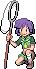
阿笔 西尔弗
西尔弗桧皮镇
桧皮镇是城都半岛南端一座偏僻的小镇。它夹在互连洞和桐树林之间，位置偏远，除了来挑战桧皮道馆的人，很少有访客。一位名叫 钢铁的精灵球工匠住在镇子西北边。呆呆兽之井在东边，井里的呆呆兽在镇上自由闲逛。
钢铁的精灵球工匠住在镇子西北边。呆呆兽之井在东边，井里的呆呆兽在镇上自由闲逛。
道具
 万灵药木炭小屋门前的木柴堆上（隐藏道具）
万灵药木炭小屋门前的木柴堆上（隐藏道具） 白球果西北边钢铁家后面的树上（每天一次）
白球果西北边钢铁家后面的树上（每天一次） 速度球赶走火箭队后由钢铁给予
速度球赶走火箭队后由钢铁给予- 招式学习器89（急速折返）打败道馆馆主阿笔后由他给予
- 之后再来
 木炭木炭小屋，把两只大葱鸭从桐树林带回来后由徒弟给予
木炭木炭小屋，把两只大葱鸭从桐树林带回来后由徒弟给予
黑衣男人
你走近镇子东边的呆呆兽之井时，会看到一个穿黑衣的男人在为难一位居民。他自称是火箭队的成员。他承认火箭队曾经解散过一次，但声称组织已经复活，要继续实现 坂木的目标。他推开那位居民，对方慌忙跑回镇上，然后他站到井口把路堵住。跟他说话，他会说井里很危险，他只是守着不让人受伤。
坂木的目标。他推开那位居民，对方慌忙跑回镇上，然后他站到井口把路堵住。跟他说话，他会说井里很危险，他只是守着不让人受伤。
木炭小屋
镇子东南边的房子里有一座烧木炭的窑。主人用一只大葱鸭去桐树林砍树，取得原料。木头经过处理烧成木炭，再供应给本地的友好商店出售。
拯救呆呆兽！
去西北边的房子和钢铁说话。如果你是来订做特制精灵球的，那得等等了。他告诉你，有人在呆呆兽之井看到了一个叫火箭队的犯罪组织的成员，而这个组织据说三年前就解散了。镇上传言他们在割呆呆兽的尾巴拿去卖！你来的时候钢铁正要去找他们算账，说完就冲出去救宝可梦了。
呆呆兽之井
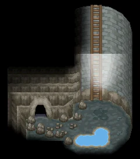
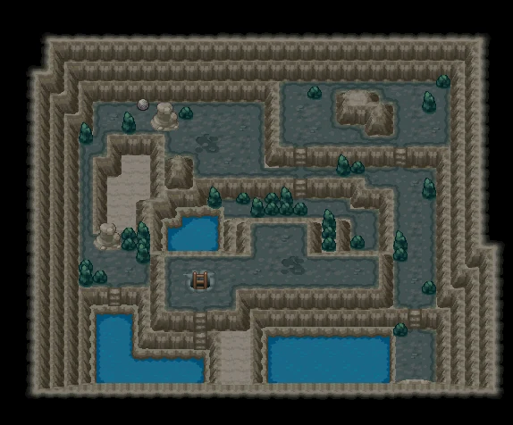
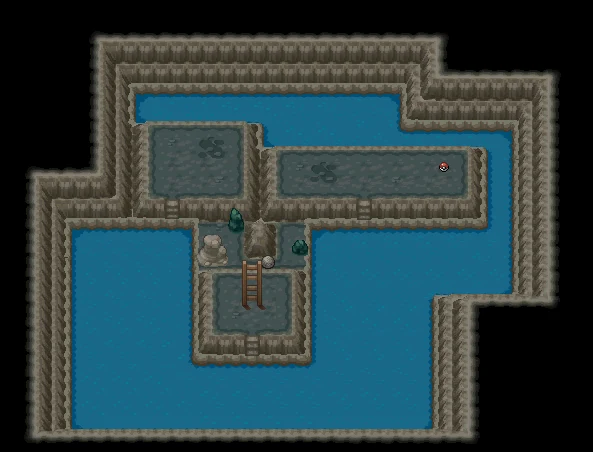
呆呆兽之井在镇子东边，靠近33号道路。洞里住着镇上当宠物养的呆呆兽。传说大约 400 年前，井里的一只呆呆兽打了个哈欠，结束了困扰桧皮镇很久的干旱。
训练家
- 火箭队手下 ₽360
 小拉达 Lv.9
小拉达 Lv.9 - 火箭队手下 ₽440
 超音蝠 Lv.9
超音蝠 Lv.9 - 火箭队手下 ₽360小拉达 Lv.7超音蝠 Lv.9
可遇到的宝可梦
- B1F
- 超音蝠洞窟 · Lv.5-8 · 85%
 呆呆兽洞窟 · Lv.6, 8 · 15%
呆呆兽洞窟 · Lv.6, 8 · 15%- 钓鱼
 鲤鱼王破旧钓竿 · Lv.10 · 85%
鲤鱼王破旧钓竿 · Lv.10 · 85% 角金鱼破旧钓竿 · Lv.10 · 15%
角金鱼破旧钓竿 · Lv.10 · 15%
道具
 好伤药 ×2B1F，东北边的岩脊上
好伤药 ×2B1F，东北边的岩脊上
B1F，中央下层，东边一块孤零零的岩石上（隐藏道具）- 之后再来
 超级球入口，水洼最北边，钢铁站过的位置（隐藏道具）
超级球入口，水洼最北边，钢铁站过的位置（隐藏道具）- 万灵药B1F，中央岩脊的东侧（隐藏道具，需要特殊能力）
- 招式学习器18（求雨）B2F，东边的岩脊上（需要特殊能力）
 王者之证B2F，西边岩脊上的男人给予（需要特殊能力）
王者之证B2F，西边岩脊上的男人给予（需要特殊能力）
入口
一进井就能看到钢铁。刚才堵在入口的火箭队手下被钢铁一吼，吓得掉进了井里。钢铁想追，结果自己也脚下一滑，重重地摔在背上。他暂时动不了，所以得由你替他去救呆呆兽。
B1F
往北找到第一个手下并打败他。爬上东北边的岩脊拿好伤药，再和一个女手下对战。走下楼梯往西，和第三个手下对战。往北经过几只被抓住的呆呆兽，和负责这次行动的干部对战。跟他说话，他说自己常被称为火箭队里最可怕、最冷酷的人。他叫你别多管闲事，然后和你开战。
对战兰斯
火箭队干部 兰斯 奖金 ₽480
被打败后，兰斯承认火箭队在三年前接到解散命令后仍在暗中活动。他不太担心你会妨碍组织的计划，但警告你要好好害怕他们接下来要做的事。手下们逃走了，钢铁也重新站了起来。确认两只呆呆兽没事后，他带你回到他家。
工匠钢铁
钢铁称赞你救了镇上的呆呆兽。他说，正如他之前提到的，三年前一个叫 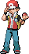
球果盒的画面会自动打开，让你选一种球果交给钢铁。他一次只收一种，但数量不限。交给他的球果第二天就会做成对应的精灵球。
之后，他的孙女会给你他的电话号码。
球果共有七种，每种对应一种精灵球：
| 球果 | 精灵球 | 效果 | ||
|---|---|---|---|---|
| 黑球果 | 沉重球 | 沉重球 | 对越重的宝可梦越有效。 | |
| 蓝球果 | 诱饵球 | 对用钓竿钓到的宝可梦更有效。 | ||
| 绿球果 | 友友球 | 友友球 | 捕捉后宝可梦更亲近。会影响迁怒、报恩和亲密度进化。 | |
| 粉球果 | 甜蜜球 | 甜蜜球 | 对和我方出战宝可梦同种但性别相反的宝可梦更有效。 | |
| 红球果 | 等级球 | 等级球 | 对方等级越低、我方出战宝可梦等级越高，越容易捕捉。 | |
| 白球果 | 速度球 | 对基础速度高的宝可梦更有效。 | ||
| 黄球果 | 月亮球 | 月亮球 | 对进化链中有用月之石进化的宝可梦更有效。 | |
桧皮道馆
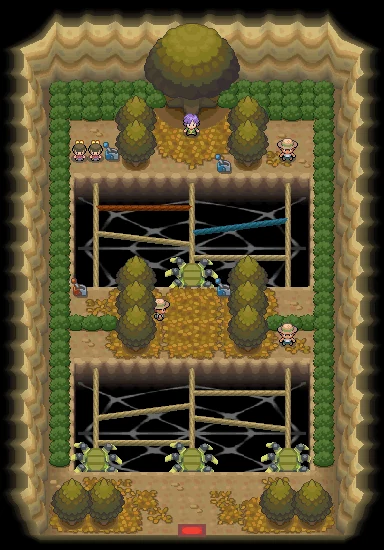
馆主：阿笔
行走的虫宝可梦图鉴
桧皮道馆专精虫属性宝可梦。虫属性招式对恶、草、超能力属性效果绝佳，而虫属性宝可梦怕火、飞行、岩石属性的招式。
道馆地板上有两道大缝隙，上面架着一系列像蜘蛛网一样的轨道。要越过缝隙，挑战者得坐上圆丝蛛造型的小车沿轨道行驶。小车总是在第一个能拐的地方拐弯，但挑战者可以拨动几个开关，接上或断开某段轨道来改变路线。坐最左边的小车到中间区域，和捕虫少年 Benny 对战。坐下一辆车越过第二道缝隙，在建筑西北部和双胞胎 Amy & Mimi 对战。拨动附近的蓝色开关断开蓝色轨道，小车就能开到中西部。再拨动红色开关断开红色轨道，最后坐一次小车就能到馆主面前。
阿笔先派出飞天螳螂，它攻击和速度都高，是他最强的宝可梦。急速折返是强力的虫属性招式，对菊草叶这样的草属性宝可梦伤害很大。阿笔另外两只宝可梦威胁不大，不过铁壳蛹的毒针可能让目标中毒。虫属性宝可梦对岩石属性的高防御几乎没办法；如果你在桔梗市跟那个男孩换了大岩蛇，用落石反击就能轻松获胜。
训练家
- 捕虫少年 Al₽192
 绿毛虫 Lv.12
绿毛虫 Lv.12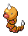
独角虫 Lv.12 - 捕虫少年 Benny₽192独角虫 Lv.7
 铁壳蛹 Lv.9
铁壳蛹 Lv.9 大针蜂 Lv.12
大针蜂 Lv.12 - 捕虫少年 Josh₽208
 派拉斯 Lv.13
派拉斯 Lv.13 - 双胞胎 Amy & Mimi₽320
 芭瓢虫 Lv.10
芭瓢虫 Lv.10 圆丝蛛 Lv.10
圆丝蛛 Lv.10
道馆馆主 阿笔 奖金 ₽1800
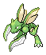
飞天螳螂Lv.17 · 虫 / 飞行对战结束后，阿笔会授予你昆虫徽章：30 级以下的宝可梦都会听你的话，并且能在野外使用居合斩。他还会送你招式学习器89（急速折返）作为奖励。
埋伏！
你走到镇子西边时，劲敌（西尔弗）追了上来。他问火箭队是不是真的回来了，听说你打败了他们，却说你在撒谎。他逼你和他对战来证明自己。
劲敌对战 2
劲敌（西尔弗）上次对战后又添了两只宝可梦。鬼斯被幽灵、超能力、恶属性攻击打会受重伤，而且它防御很低，几乎什么属性的攻击都管用。幽灵属性宝可梦免疫一般属性招式，所以撞击、抓这类招式没用。超音蝠怕岩石、电、超能力、冰属性招式。他从空木研究所偷走的宝可梦已经进化，还学会了和自己属性相同的招式，有属性一致加成，威力更大。别让你自己的最初伙伴去和它硬碰，否则会受重伤。
劲敌（西尔弗）（如果你选了菊草叶） 奖金 ₽1152
劲敌（西尔弗）（如果你选了火球鼠） 奖金 ₽1152
劲敌（西尔弗）（如果你选了小锯鳄） 奖金 ₽1152
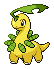
月桂叶Lv.18 · 草对战结束后，他宣称自己讨厌一切弱者，不管是人还是宝可梦。西尔弗发誓要变强，消灭弱者，包括火箭队。他警告你别挡他的路，然后往桐树林走了。
↓ 下一站：桐树林
桐树林
桐树林是桧皮镇和34号道路之间的一片茂密森林。树木长得太密，大部分阳光都照不到地面，这里看起来就像永远是黑夜。离南边入口不远处有一座供奉森林守护神的祠堂。
可遇到的宝可梦
- 绿毛虫仅心金草丛 · Lv.5-6 · 早 50% · 日 60% · 夜 0%
 铁甲蛹仅心金草丛 · Lv.5 · 早 30% · 日 0% · 夜 0%
铁甲蛹仅心金草丛 · Lv.5 · 早 30% · 日 0% · 夜 0%- 铁甲蛹仅心金草丛 · Lv.5-6 · 早 0% · 日 30% · 夜 0%
- 独角虫仅魂银草丛 · Lv.5-6 · 早 50% · 日 60% · 夜 0%
- 铁壳蛹仅魂银草丛 · Lv.5-6 · 早 30% · 日 30% · 夜 0%
- 超音蝠草丛 · Lv.5 · 早 5% · 日 5% · 夜 0%
- 超音蝠草丛 · Lv.5, 6 · 早 0% · 日 0% · 夜 25%
- 走路草草丛 · Lv.5-6 · 早 0% · 日 0% · 夜 60%
- 派拉斯草丛 · Lv.5-6 · 早 15% · 日 5% · 夜 15%
- 头锤（A 组树）
 咕咕头锤 · Lv.3-5 · 60%
咕咕头锤 · Lv.3-5 · 60%- 绿毛虫仅心金头锤 · Lv.3-5 · 30%
- 独角虫仅魂银头锤 · Lv.3-5 · 30%
- 铁甲蛹仅心金头锤 · Lv.3-5 · 10%
- 铁壳蛹仅魂银头锤 · Lv.3-5 · 10%
- 头锤（B 组树）
- 咕咕头锤 · Lv.6-8 · 50%
 巴大蝶仅心金头锤 · Lv.6-8 · 10%
巴大蝶仅心金头锤 · Lv.6-8 · 10%- 大针蜂仅魂银头锤 · Lv.6-8 · 10%
 猫头夜鹰头锤 · Lv.6-8 · 10%
猫头夜鹰头锤 · Lv.6-8 · 10% 榛果球头锤 · Lv.6-8 · 30%
榛果球头锤 · Lv.6-8 · 30%- 钓鱼
- 鲤鱼王破旧钓竿 · Lv.10 · 85%
 蚊香蝌蚪破旧钓竿 · Lv.10 · 15%
蚊香蝌蚪破旧钓竿 · Lv.10 · 15%
道具
- 南部区域
 活力碎片东南区域，一条小死胡同里
活力碎片东南区域，一条小死胡同里 小蘑菇东南区域，最北边那个花坛的角落里（隐藏道具）
小蘑菇东南区域，最北边那个花坛的角落里（隐藏道具）- 秘传学习器01（居合斩）把两只大葱鸭都带回去后，由木炭小屋的主人给予
- 北部区域（需要居合斩）
 解毒药 ×2池塘西南角往南两步、往东一步（隐藏道具）
解毒药 ×2池塘西南角往南两步、往东一步（隐藏道具）
池塘东侧，被三棵树挡住一半- 力量强化训练家提示牌东边的死胡同
 除虫喷雾池塘东边，最近那棵孤树北边的花坛里（隐藏道具）
除虫喷雾池塘东边，最近那棵孤树北边的花坛里（隐藏道具）- 好伤药池塘东边，北边台阶西南方的小凹处（隐藏道具）
- 小蘑菇 ×2去教头锤的人那里的路上，东墙花坛对面的角落（隐藏道具）
森林东北部，最南边那棵孤树的东南角（隐藏道具）  ＰＰ单项小补剂 ×2森林东北部，几棵孤树的东边
ＰＰ单项小补剂 ×2森林东北部，几棵孤树的东边
森林东北部，最北边那棵孤树的西侧（隐藏道具）- 万灵药森林东北部，最北边花坛往西一步、往南两步（隐藏道具）
- 之后再来
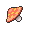
大蘑菇北部区域，池塘西边（需要特殊能力）
大葱鸭出走记
你走近南边入口不远处时，桧皮镇木炭小屋的徒弟会拦住你。他说那两只砍树烧木炭的大葱鸭跑到森林深处去了。他解释说大葱鸭耳朵很灵，你踩到树枝时它会转向声音的方向。他害怕黑漆漆的森林，不敢动，所以得靠你去找。大葱鸭很容易受惊，从错误的方向靠近只会把它赶到更深的地方。
- 第一只就在东边不远处，一大片树丛的西南角。踩一下它南边的树枝堆吸引它的注意，然后绕过树丛从背后靠近。
- 第二只在森林东南部，第二片树丛的西北角。走最东边的路，踩大葱鸭东边的任意一堆树枝吸引它注意。绕过去从南边靠近，把它赶到有三棵树的树丛那里。再绕回来踩最东边的那堆树枝，然后绕过三棵树的树丛从背后靠近它。
男孩向你道谢，解释说因为他没有徽章，两只大葱鸭都不听他的。片刻之后他的老板来了。看到自己的两只宝可梦平安回来，为了感谢你挽救了他的生意，他送你秘传学习器01（居合斩）。把这个野外招式教给能学的宝可梦，用它砍掉附近的小树，就能开出一条路。如果你回到木炭小屋，徒弟还会送你一块木炭。
摇一摇
池塘东南边有个男人站在台阶上，面对着一棵树。你走近时，会看到他使劲撞那棵树。跟他说话，他说自己在用头锤摇树，邀请你也试试，并提出教你的宝可梦这个招式。这个野外招式能让训练家摇动这种树，有时会掉下一只野生宝可梦。根据时间段不同，掉下来的宝可梦可能是睡着的。有几种宝可梦只能用这种方法遇到。
神秘的女孩
你走近北边的台阶时，又遇到那个穿和服的神秘女孩，她似乎在黑暗的森林里迷路了。她说如果你觉得在桔梗市见过她，那一定是你的错觉，并问你能不能带她走出森林。她怀疑你到底知不知道出口在哪，于是你的伙伴宝可梦往西走了一小段指路。她夸了夸你的宝可梦，然后继续往前走了。
↓ 下一站：34号道路
34号道路
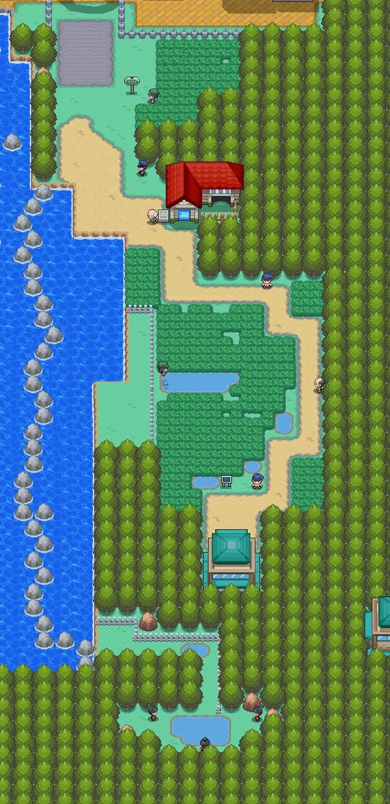
相邻↓ 桐树林
34号道路是一条绿意盎然的小路，沿着海从桐树林通往满金市。城都的宝可梦培育屋就在北边。
训练家
- 短裤小子 Samuel₽128小拉达 Lv.7
 穿山鼠 Lv.10
穿山鼠 Lv.10 烈雀 Lv.8烈雀 Lv.8
烈雀 Lv.8烈雀 Lv.8 - 宝可梦迷 Brandon₽832
 布鲁 Lv.13
布鲁 Lv.13 咩利羊 Lv.13
咩利羊 Lv.13 - 野营女 Gina₽192
 毽子草 Lv.9毽子草 Lv.9
毽子草 Lv.9毽子草 Lv.9 妙蛙种子 Lv.12
妙蛙种子 Lv.12 - 短裤小子 Ian₽192
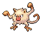
猴怪 Lv.10 地鼠 Lv.12
地鼠 Lv.12 - 警察 Keith₽680
仅限夜晚 卡蒂狗 Lv.17
卡蒂狗 Lv.17 - 野营男 Todd₽224
 可达鸭 Lv.14
可达鸭 Lv.14 - 精英训练家 Irene₽1440
和 Jenn 进行双打对战角金鱼 Lv.22 金鱼王 Lv.24
金鱼王 Lv.24 - 精英训练家 Jenn₽1560
和 Irene 进行双打对战海星星 Lv.24 宝石海星 Lv.26
宝石海星 Lv.26 - 精英训练家 Kate₽1680
 大舌贝 Lv.26
大舌贝 Lv.26 刺甲贝 Lv.28
刺甲贝 Lv.28
可遇到的宝可梦
- 小拉达草丛 · Lv.11, 13 · 35%
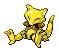
凯西草丛 · Lv.10 · 10% 催眠貘草丛 · Lv.10, 12 · 50%
催眠貘草丛 · Lv.10, 12 · 50% 百变怪草丛 · Lv.10 · 5%
百变怪草丛 · Lv.10 · 5%- 钓鱼
- 鲤鱼王破旧钓竿 · Lv.10 · 85%
 大钳蟹破旧钓竿 · Lv.10 · 15%
大钳蟹破旧钓竿 · Lv.10 · 15%- 头锤（A 组树）
- 咕咕头锤 · Lv.9-10 · 50%
- 榛果球头锤 · Lv.9-10 · 30%
 蛋蛋头锤 · Lv.9-10 · 20%
蛋蛋头锤 · Lv.9-10 · 20%- 头锤（B 组树）
- 咕咕头锤 · Lv.11-12 · 50%
- 芭瓢虫仅魂银头锤 · Lv.11-12 · 30%
- 圆丝蛛仅心金头锤 · Lv.11-12 · 30%
- 蛋蛋头锤 · Lv.11-12 · 20%
道具
- 招式学习器12（挑衅）关口里，柜台后的女人给予
- 好伤药培育屋东南边，短裤小子 Ian 东边那片草丛往北一步的树里（隐藏道具）
- 招式学习器63（查封）最北边那片草丛
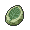
叶之石登记野营女 Gina 的电话后，她有时会送- 之后再来
 神奇糖果西边围栏里靠近高草丛处，中间那棵树东北角往北三步（隐藏道具，需要特殊能力）
神奇糖果西边围栏里靠近高草丛处，中间那棵树东北角往北三步（隐藏道具，需要特殊能力） 金珠西边围栏里靠近高草丛处，东南角（需要特殊能力）
金珠西边围栏里靠近高草丛处，东南角（需要特殊能力）- 强力香草西南边的空地，打败精英训练家 Kate 后由她给予（需要特殊能力）
见见爷爷奶奶
你走近宝可梦培育屋时，琴音/响和玛力露刚好到达。对方去看望自己的爷爷，感谢老人帮忙培育了一只宝可梦，然后注意到了你。对方把你介绍给老人，再带你进屋认识自己的奶奶。临走时，你的朋友把电话号码告诉了你。
宝可梦培育屋
训练家最多可以把两只宝可梦寄放在宝可梦培育屋，由这对老夫妇照顾。寄放的宝可梦在你每走一步时获得 1 点经验值。领回宝可梦要付 ₽100 的固定费用，每升一级再加 ₽100。
如果同时寄放了一对能配对的雄性和雌性，回来时可能会发现老夫妇找到了一颗蛋。像神奇蛋一样把蛋带在队伍里，它最终会孵化。孵出来的是母方进化链中最初的那个宝可梦。如果找不到某一方的亲代，可以用百变怪代替；这时孵出来的是非百变怪那一方进化链中最初的宝可梦。这是获得某些宝可梦（比如伊布）的更多个体、以及宝宝宝可梦（比如皮丘）的唯一方法。
你离开时，老爷爷会把他和老伴的电话号码都给你，这样你就能打电话问问寄放的宝可梦怎么样了。
↓ 本篇到此结束：继续下一页
原文：Bulbapedia《Walkthrough:Pokémon HeartGold and SoulSilver/Part 5》（修订版本 4452971，），作者见原文页面历史。本页由 Eli 的杂货间翻译为中文，并有改动（重新排版、精简部分图注）。原文与译文均以 CC BY-NC-SA 2.5 授权。配图来自原站，版权归原作者与游戏厂商；地图截图和人物图来自 Bulbagarden Archives，游戏画面版权归 Nintendo / Game Freak / The Pokémon Company。道具与属性图标来自 PokeAPI sprites。